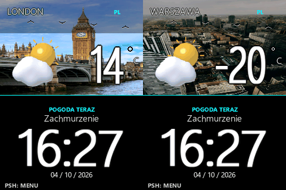
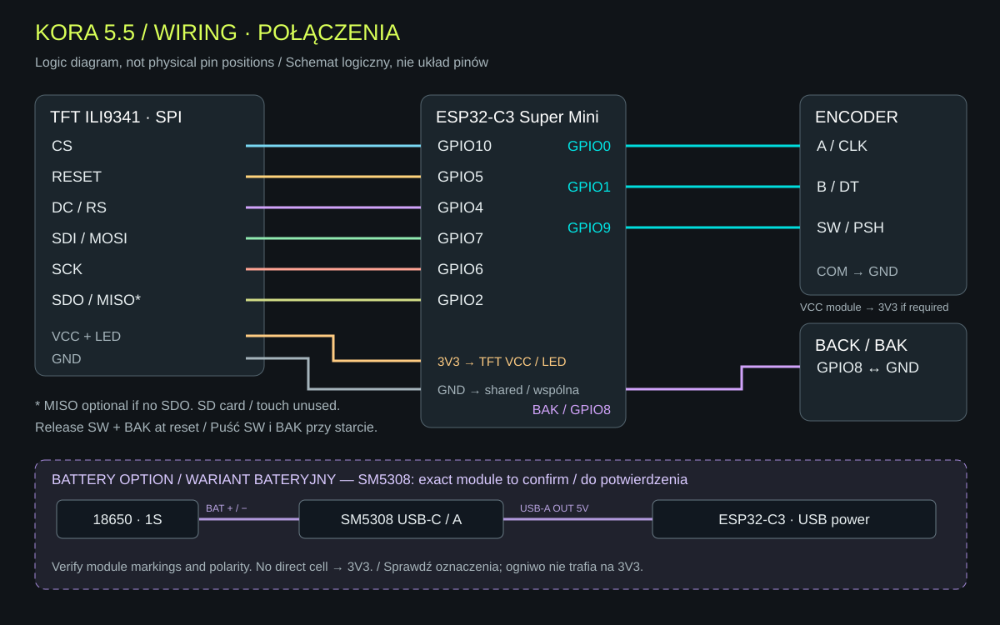
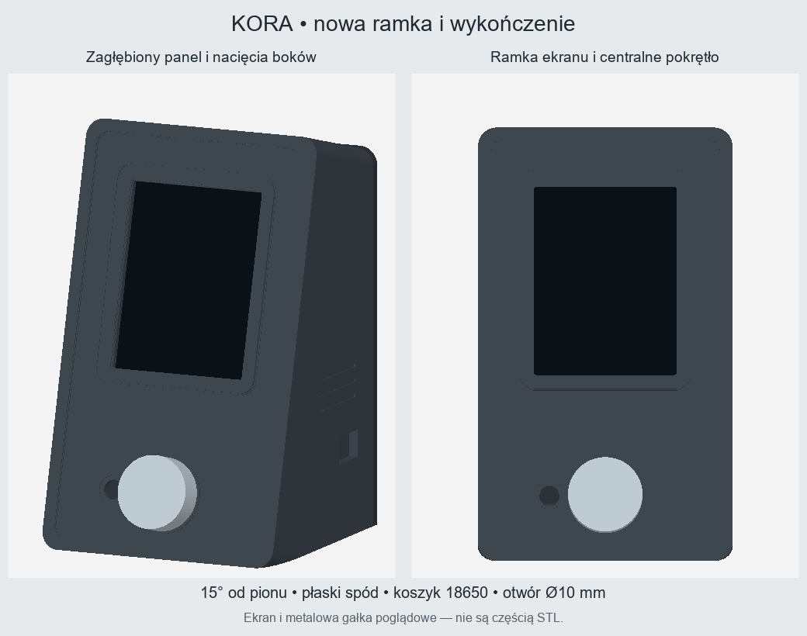
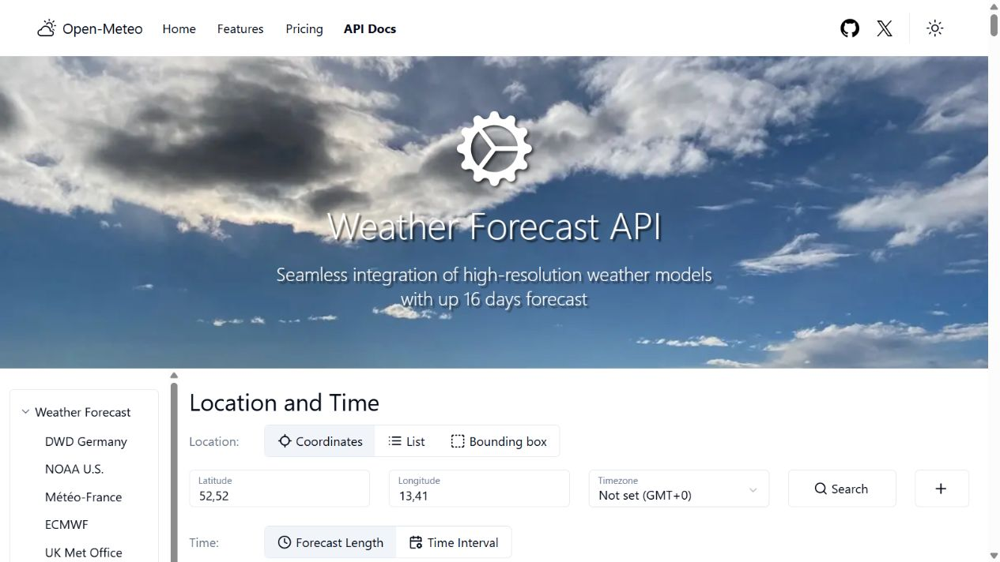
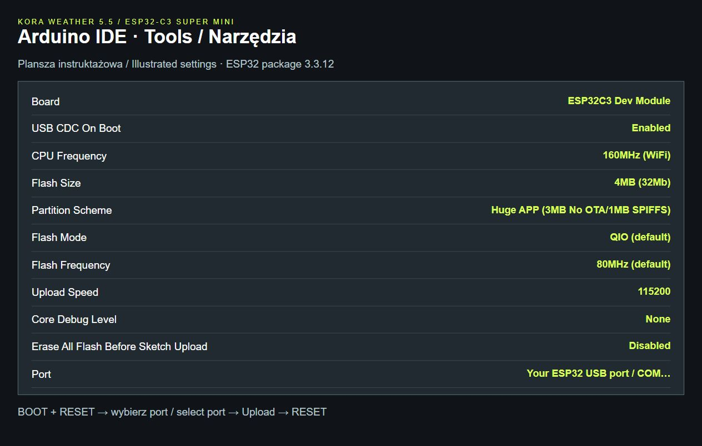
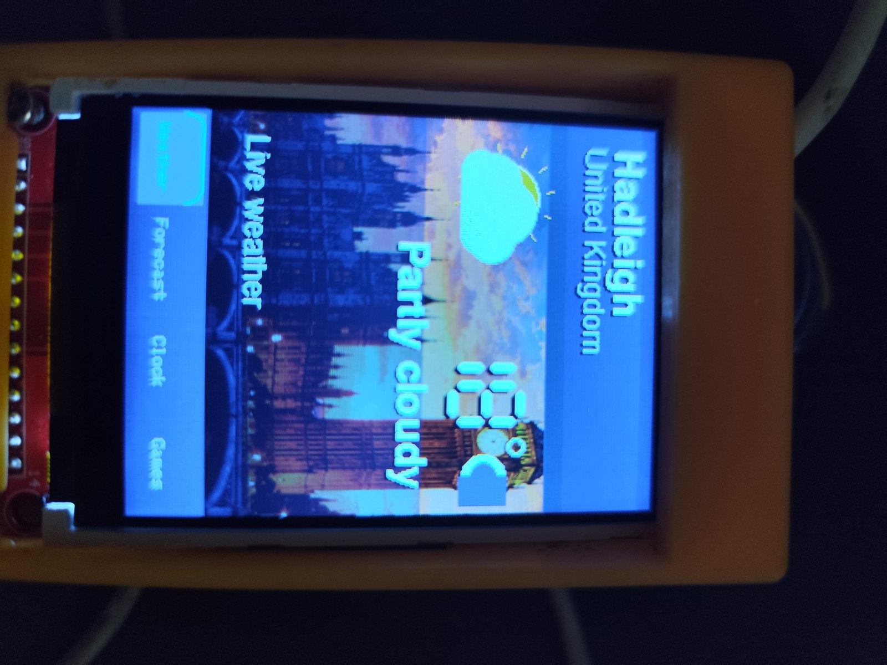

Online weather
Wi-Fi data from Open-Meteo: temperature, forecast, precipitation, pressure, wind and humidity. No API key required.
Weather on your desk. Classic games at your fingertips. A custom portrait-display station with animated weather and rotary control, housed in an angled 3D-printable enclosure.


A city photograph fills the upper half of the main view, with a 100 px weather icon and bold temperature digits with black outlines. The three-day forecast uses 64 px icons. Separate pages show pressure, wind, humidity and a larger local clock.



Wi-Fi data from Open-Meteo: temperature, forecast, precipitation, pressure, wind and humidity. No API key required.
Slow clouds, birds above all four cities, sun rays, raindrops and snowflakes. Effects follow the weather condition code.
London, Warsaw, Madrid or New York. Selection changes the weather, photograph and time zone. Language and country settings persist after a restart.
The rotary encoder selects games and controls play. A press starts, pauses or resumes the action; a separate button returns to the menu. In games, the city background gives way to the playfield.
Neon Blocks: turn to move, click to rotate/start, double-click to drop. Hold for 0.65–1.24 seconds and release to toggle pause. Hold for 1.3 seconds to return to the menu from any game state. The BAK button also returns to the menu.


The menu also includes Snake, Lucky Reels and a Lotto 6/59 number generator. Lotto generates numbers; it does not retrieve draw results.
The gallery shows software previews, not photographs of the display. Game scenes remain intact when paused or after losing.
| Part | Quantity | Purpose |
|---|---|---|
| ESP32-C3 Super Mini | 1 | Controller, Wi-Fi and game logic |
| TFT ILI9341 · SPI · 240 × 320 | 1 | 56 × 89 mm PCB; 45 × 60 mm portrait screen |
| Enkoder obrotowy / Rotary encoder | 1 | Rotary control with SW push switch; Ø10 mm enclosure hole |
| Przycisk BAK / BAK button | 1 | Return to menu, switches to GND |
| 18650 + koszyk / holder | 1 + 1 | Enclosure bay: 25 × 82 × 22 mm |
| Przewody, USB, wkręty / Wires, USB, screws | — | Connections and body/clip assembly |
| SM5308 USB-C / USB-A · 1S | 1 | Likely module used; the listing describes 5 V / 2 A output. Exact board to be confirmed. |
The enclosure follows the supplied TFT dimensions. Print the fit-test panel first. SM5308 is a provisional identification; verify markings, size and board revision on the actual module.
Logical wiring for the USB-powered version. GPIO labels match the source; the drawing does not represent the physical board pin positions. All signals use 3.3 V logic.

| TFT ILI9341 | ESP32-C3 | Controls |
|---|---|---|
| CS | GPIO10 | A / CLK → GPIO0 |
| RESET / RST | GPIO5 | B / DT → GPIO1 |
| DC / RS | GPIO4 | SW / PSH → GPIO9 |
| SDI / MOSI | GPIO7 | BAK → GPIO8 |
| SCK / CLK | GPIO6 | COM → GND |
| SDO / MISO | GPIO2 | VCC → 3V3 (module) |
| VCC + LED | 3V3 | SW & BAK → GND |
| GND | GND | INPUT_PULLUP |
If the TFT has no SDO, MISO can remain unconnected. SD card and touch are not used. VCC and LED reflect the 3.3 V module specified for this build; check your own module markings. GPIO2, GPIO8 and GPIO9 are boot strapping pins: release SW and BAK during power-up and reset.
Battery option: connect the 18650 holder to the SM5308 BAT input, then its 5 V USB-A output to the ESP32-C3 USB port. The module USB-C input is for charging. This section is provisional: confirm labels and polarity on your actual board before connecting. The cell does not connect directly to 3V3.

The wedge body stands on a flat base. A 15° backward tilt, screen bezel, recessed panel, side grooves and a centered knob give the build a composed finish. The rear cover provides access to the electronics and 18650 holder.
The pack includes the body, rear cover, a clip to print four times, fit-test panel and parametric source. The screen and metal knob shown in the preview are illustrative.
The STL meshes were checked for watertightness, connected solids and cover interference. A physical test print has not yet been made. Check holder fit, active-screen position and USB access against your own parts.
Complete Arduino sketch with artwork, games and a PL/EN build guide. Enter your own Wi-Fi name and password.
Download code ZIP ↓ESP32-C3 · 4 MB flash · Huge APP · no PSRAM
Four STL models, assembly instructions, dimensions and parametric source.
Download STL ZIP ↓Print the fit-test panel first.
Install the Espressif ESP32 board package, Adafruit GFX, Adafruit ILI9341, Adafruit BusIO and ArduinoJson 7.
Open KoraWeatherWOW591.ino with every .h file beside it. Enter Wi-Fi details. Select ESP32C3 Dev Module, 4 MB, Huge APP and USB CDC On Boot: Enabled.
Wire using the table and check weather and games. Print the fit panel, then the body and four clips. The package guide covers print orientation and screws.
Version 5.9.1 compiled for ESP32-C3: 73% flash, 12% static RAM. Previews and geometry were checked in software; appearance, performance and fit must be verified on the device.
Open the Open-Meteo documentation. This personal weather station does not need an account or an API key. The API address is already in the sketch; connect it to the internet over 2.4 GHz Wi-Fi. The country menu selects coordinates and timezone for London, Warsaw, Madrid or New York.
Open-Meteo · Weather Forecast API ↗

Test the London example using the link below. Its JSON response contains current and daily. Do not copy weather readings manually: the device retrieves them automatically. For a custom city, edit lat, lon and apiTz in the sketch location table; apiTz uses URL encoding, for example Europe%2FLondon.
The free endpoint is for non-commercial use and has request limits. See Open-Meteo for its terms and commercial option.
Download Arduino IDE 2 from arduino.cc. In File → Preferences, add the URL below to Additional boards manager URLs. Keep any existing URLs.
https://espressif.github.io/arduino-esp32/package_esp32_index.json
In Tools → Board → Boards Manager, search for esp32 and install esp32 by Espressif Systems. This project was compiled with version 3.3.12. In Library Manager install Adafruit GFX Library, Adafruit ILI9341, Adafruit BusIO and ArduinoJson 7.x.
Arduino IDE ↗ · Espressif · installation ↗


Extract the ZIP. Open KoraWeatherWOW591/KoraWeatherWOW591.ino and keep every .h file in the same folder. At the start of the sketch, replace the WIFI_SSID and WIFI_PASS placeholders with your own 2.4 GHz network name and password. Keep the quotation marks. Do not publish your configured password.
WIFI_SSID = "YOUR_WIFI_SSID"; WIFI_PASS = "YOUR_WIFI_PASSWORD";
This is an illustrative excerpt: edit the existing declarations rather than adding duplicate variables.
Select Tools → Board → esp32 → ESP32C3 Dev Module. Super Mini may not be listed by name. These settings are for the 4 MB flash variant with native ESP32-C3 USB.

| Tools | Value / Wartość |
|---|---|
| Board | ESP32C3 Dev Module |
| USB CDC On Boot | Enabled |
| CPU Frequency | 160MHz (WiFi) |
| Flash Size | 4MB (32Mb) |
| Partition Scheme | Huge APP (3MB No OTA/1MB SPIFFS) |
| Flash Mode | QIO (default) |
| Flash Frequency | 80MHz (default) |
| Upload Speed | 115200 |
| Core Debug Level | None |
| Erase All Flash Before Sketch Upload | Disabled |
| Port | Your ESP32 USB port / COM… |
Huge APP is required: the sketch uses about 2.31 MB, so the default 1.2 MB application partition is too small. Keep the default QIO and 80 MHz settings; if your board variant needs different flash settings, follow its vendor documentation. ESP32-C3 does not use USB DFU or ESP32-S3-specific settings.
Guide sources: Espressif USB CDC · Tools menu · Open-Meteo API

A YouTube demonstration will appear here, showing weather, controls and games on the real device.